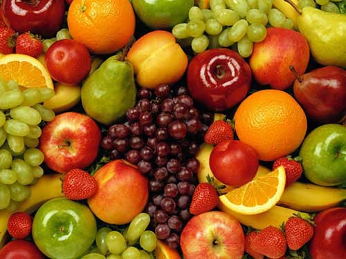

html块
1、div标签 块元素，表示一块内容，没有具体的语义。
2、span标签 行内元素，表示一行中的一小段内容，没有具体的语义。
含样式和语义的标签
1、em标签 行内元素，表示语气中的强调词
2、i标签 行内元素，原本没有语义，w3c强加了语义，表示专业词汇
3、b标签 行内元素，原本没有语义，w3c强加了语义，表示文档中的关键字或者产品名
4、strong标签 行内元素，表示非常重要的内容
语义化的标签
语义化的标签，就是在布局的时候多使用语义化的标签，搜索引擎在爬网的时候能认识这些标签，理解文档的结构，方便网站的收录。比如：h1标签是表示标题，p标签是表示段落，
ul、li标签是表示列表，a标签表示链接，dl、dt、dd表示定义列表等，语义化的标签不多。
含义标签主要是对搜索引擎有用
div,span等无意义标签主要配合样式标签用
这是一个专业词汇
我今天不吃饭
